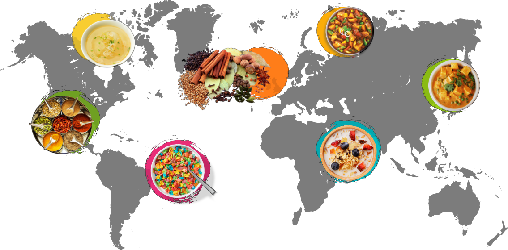

JAPAN
MISO SOUP: is a traditional soup consisting essentially of broth, especially dashi, mixed with miso paste.
Breakfast helps all of us to start the day with the right energy, but not everyone eats or drinks the same things during the first meal of the day. The differences can already be seen in the same nation, let alone between the various countries of the world!
MISO SOUP: is a traditional soup consisting essentially of broth, especially dashi, mixed with miso paste.

JOK: rice porridge with pork meatballs and eggs.
HUEVOS RANCHEROS: runny fried eggs with hot salsa on corn tortillas.
CHURROS: typical of Iberian and Latin American cuisine, based on a fried batter, dusted with sugar.
FUL MEDAMES: cooked fava and chickpeas also typical of Palestine, Jordan, Syria and Lebanon.

PAO DE QUEIJO: savory cheese sandwiches made from tapioca or cassava flour.